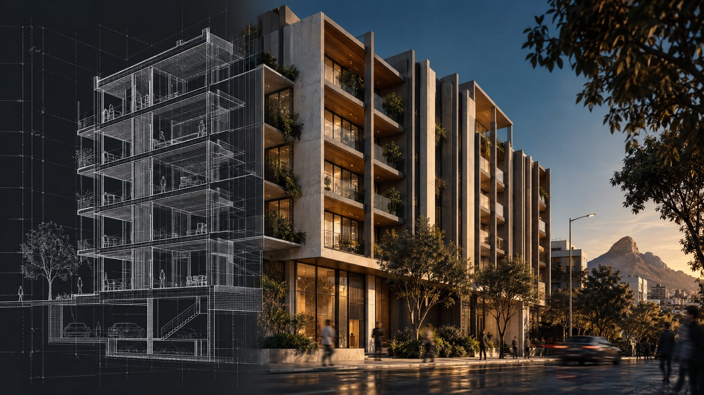

AI for Visualisation
Most people using image models in practice are gambling. They prompt, they discard, they prompt again, and when a client asks for the same building with a different cladding they start over. This course is about control: reference conditioning, mark-up, structure preservation, a prompt system your whole studio can reuse — and then taking the stills you trust into moving image without the building melting on the way through.

What you will be able to do.
Keep the design you drew
Render from your own sketches, massing and models without the model redesigning the building on the way through.
Produce comparable options
Facade, material and massing variants that differ only in the one thing you changed — so a client can actually choose.
Work from the real site
Google Earth, street view and site photographs as context you can trust, decluttered and re-lit.
Make it move
Film sequences from your own stills — camera moves that hold the geometry, cut together into something you can put in front of a client.
Build a house style
A documented prompt system that produces your practice's look, not the model's default.
9 modules.
Draft structure. It will move as we build and test the material — waiting-list members get told when it changes, and get a say.
-
01
How image models read a prompt
- Diffusion in one lesson — only the parts that change what you type
- Why the same prompt gives different answers, and how to stop that
- Model families: what to reach for and when
- Aspect ratio, resolution and when to upscale
-
02
Conditioning: the reference is the prompt
- Image inputs, and why they beat adjectives
- Depth, edge and segmentation control
- Mark-up as instruction — the coloured-zone method
- Masks and in-painting for surgical changes
-
03
Sketch and model to render
- Hand sketch to a coherent image without losing the proportion
- Rhino, SketchUp and Revit viewports as the structural base
- Clay and white-model renders as a conditioning layer
- Keeping geometry fixed while materials and light change
-
04
Facade and material studies
- The consistency block: what every variant must share
- Running a cladding study a client can judge
- Bay, rhythm and window-to-wall variants
- Presenting options as options, never as a recommendation
-
05
Real context
- Google Earth and street view as a site resource
- Removing clutter — cars, hoardings, signage
- Inserting a design into a real plot and keeping the scale
- Weather, season and time of day from one base image
-
06
Boards, plans and diagrams
- Rendered site plans that stay accurate
- Axonometrics and massing diagrams from aerial imagery
- Mood boards built from the actual place
- What AI cannot do: dimensions, annotations, anything measured
-
07
Video: holding the building still
- The video models worth your credits, and what each is good at
- First-frame and last-frame control — the only reliable lever
- Camera language these models understand: dolly, orbit, crane, reveal
- Motion strength, duration and the shots that always break
-
08
From clips to a film
- Storyboarding a walkthrough before you generate a frame
- Continuity across shots — same building, same light, same season
- Restyling a Rhino, Blender or Unreal camera path instead of inventing one
- Interpolation, upscaling, sound and the edit
-
09
A studio prompt system
- Writing prompts as reusable templates
- Packaging a workflow as a skill the whole team triggers
- Naming, versioning and storing your references
- Disclosure: telling clients what is AI, and when it matters
Written for people with live projects.
Architects and designers
You present work regularly and want imagery that argues for the design rather than for the tool.
Visualisation teams
You already render, and want AI as a controllable stage in the pipeline rather than a slot machine.
Small practices
No viz budget, high expectations, and a need for a repeatable look across every project.
No AI experience needed. You should be comfortable in one 3D or drawing package and able to export an image from it. No video editing experience assumed.
Be told when it opens.
Tell us which track you want and we will email you once it has a date and a price. Nothing is charged, nothing is committed, and the list decides what we finish first.
- No payment and no obligation.
- One email when a course has a date — not a drip campaign.
- Waiting-list members get first refusal and the launch price.
- Leave at any time, in one click.
Want it delivered privately to your team instead? Tell us about the team and we will scope a workshop.